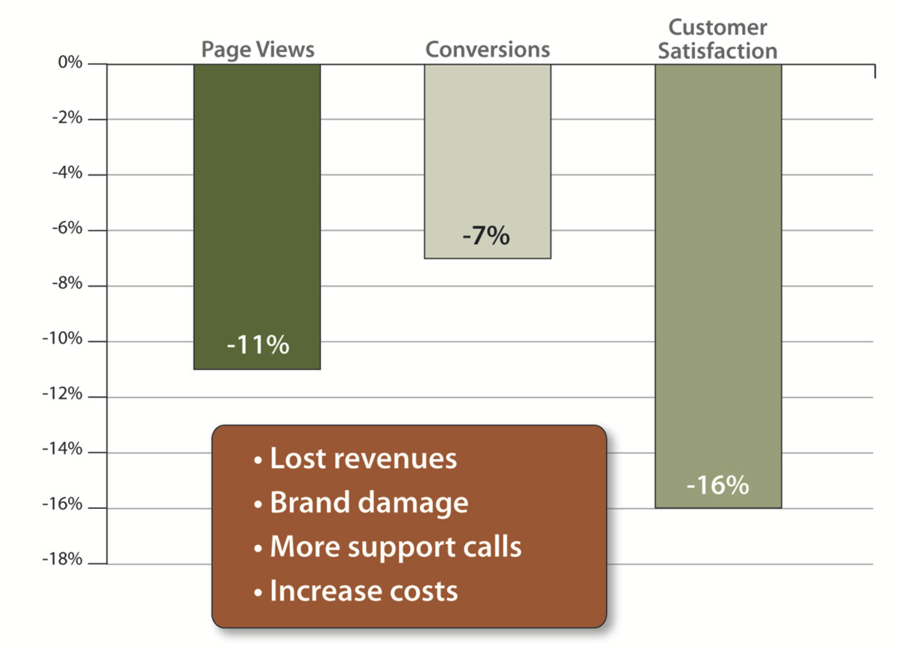
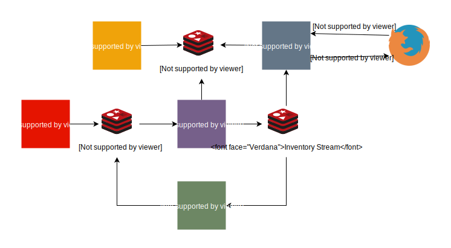

Retail Inventory
Upgrading Real-Time Inventory with Redis Enterprise
Real-Time Inventory
Qu’est-ce que c’est?
Solution
Demo
Inventory
What is available Where
What: Products
Where: Stores and DCs
Inventory Consumers
e-Commerce
Find/Reserve in Store
Order Sourcing
Store Allocation
Item Availability
Buckets for supply & demand tracking
What’s really available?
Available to Promise (ATP): Supply - Demand
Business Benefits
Omni-channel view
Optimize inventory and supply-chain
Yield management
Architecture

Inventory Challenges
Performance: volume & velocity
Accuracy: geo-distribution
Performance

Inventory Inaccuracy
Poor customer experience
Shopping cart abandonment
Reduced brand-loyalty
Remediation: refund, waiting list, cancellation, …
Real-Time Inventory with Redis Enterprise
High Performance
Linear scalability
High Availability
Wait, there’s more!
Bi-directional consistency
Multi-model: no tech sprawl
Demo
